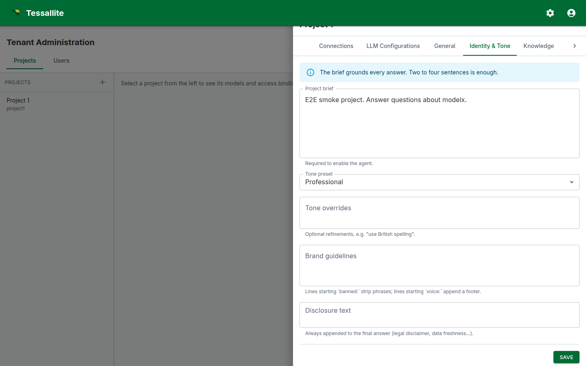

Configure your project agent
What this covers
Every Tessallite project can carry an embedded conversational agent. The agent answers questions in natural language by translating them into queries against the project's published models. This article explains what the agent is, when it is the right tool, and how to configure it.
What the agent is, and what it is not
The agent is a thin orchestration layer sitting on top of two LLM calls and the existing semantic engine. The first LLM (the answer model) reads the project policy plus the user's question, then emits a structured tool call: either a query plan, a clarification, or a refusal. The semantic engine validates and executes the query plan against the allow-listed models. A narration step turns the rows into prose. A second LLM (the judge) scores the final answer against a rubric.
The agent is not a free-form chatbot. It cannot invent measures, query unpublished models, return rows that violate row-level security, or act outside the project policy. Every answer is grounded in a deterministic query — the LLM chooses what to ask, the engine controls how the data is returned.
When to enable the agent — and when not to
Enable it when:
- The project's models are well-modelled, with crisp measure and dimension names, and at least one published target so the engine can route queries.
- A defined audience (tenant users, embedded API callers, or both) needs natural-language access without writing JDBC clients.
- You can dedicate a few hours to writing the project brief, the glossary, and the judge rubric.
Hold off when:
- The model is mid-migration. The agent will hallucinate plausible answers from a half-published catalogue and erode user trust.
- You cannot articulate which questions are in-scope.
- You want a generative writing assistant. The agent only narrates verified data.
The configuration surface
Configuration lives in the project drawer, opened from Tenant Administration → Projects by clicking the gear icon on the project row. The drawer carries nine tabs; seven of them drive the agent. Each agent tab carries one Save button at the bottom that persists the entire agent record in a single call to PUT /api/v1/projects/{id}/agent/config.

General
- Enable conversational agent. Master switch. Off by default. Enabling requires a non-empty project brief, a non-empty safety policy, at least one allow-listed model, and a selected judge rubric.
- Display name. Shown above the chat panel.
- Agent role. Free-text label ("data analyst", "controller", "merchandiser").
- Default locale. BCP-47 tag (e.g.
en-GB).
Identity & Tone
- Project brief. A short paragraph the answer LLM sees first. Two to four sentences.
- Tone preset. Professional or Friendly.
- Tone overrides. Small additions to the preset.
- Brand guidelines. Lines beginning
banned:strip the matching phrase; lines beginningvoice:append a footer. - Disclosure text. Always appended to the final answer (legal disclaimers).
Knowledge
- Manage recipes. Opens the recipe editor. Recipes are reusable cross-model query plans.
- Per-model context. For each allow-listed model, an Edit context button opens the per-model context dialog.
Safety
- Safety policy. One forbidden topic per line. Matched case-insensitively as a substring.
- Content rules. Free text surfaced to the LLM as guidance.
LLM & Judge
- Allow-list checkboxes. Tick each model the agent may query.
- Answer LLM / Judge LLM. Pickers bound to the project's LLM Configurations tab.
- Judge mode. Async (background) or Sync (block until verdict).
- Judge rubric. A reference to a rubric defined in this project.
- Judge block visibility. Transparent or Opaque.
- Visibility toggles. Show thought process, semantic query, physical query, enable feedback.
Webhook
- Webhook URL. Optional outbound URL fired on each agent turn.
Retention
- Conversation retention (days). How long turns and traces are kept. Default 30 days.
Models and routing
The allow-list and per-model context live on the project drawer. Set the allow-list on the LLM & Judge tab and edit per-model context from the Knowledge tab.

A worked example: enabling the agent on the demo project
This walkthrough assumes the bundled acme-demo tenant.
- Sign in as an admin and open Tenant Administration → Projects.
- On the
project1row, click the gear icon to open the project drawer. - LLM Configurations tab: confirm there is at least one bundle (e.g. "OpenAI · gpt-4o"). Add one if the list is empty.
- LLM & Judge tab: tick the checkboxes for
modelxandmodely. Pick the OpenAI bundle as Answer LLM and Judge LLM. Pick the bundled "Acme finance rubric"; leave mode on Async; visibility on Transparent. - Identity & Tone tab: set the display name to "Acme Insights"; paste a one-paragraph project brief. Add
banned: just kiddingandvoice: Acme Insights — figures live as of last refresh. - Safety tab: add at least one line to the safety policy (e.g. "individual employee salaries").
- General tab: switch Enable conversational agent on.
- Click Save. Navigate to the Explorer and click Chat. Send "What were sales last month?". You should see a streamed answer with route badge, citations, and judge verdict.
Common pitfalls
- Empty allow-list. The agent refuses every question. Tick at least one model.
- Project brief stuffed with model details. Keep the brief short; put per-model context in the glossary.
- Safety-policy lines that match common words. Use specific multi-word phrases.
- Sync judge with a slow LLM. Sync adds judge latency to user-visible latency.
- Brand guidelines treated as prose. Only
banned:andvoice:are mechanically enforced.
Operating the agent
Three feedback loops keep the agent healthy:
- Per-turn user feedback. Up/down votes. Track the ratio in Metrics.
- Judge calibration. Review the Recent calibration table weekly.
- Eval runs. Metrics → Run eval after every meaningful change to the brief, glossary, or rubric.